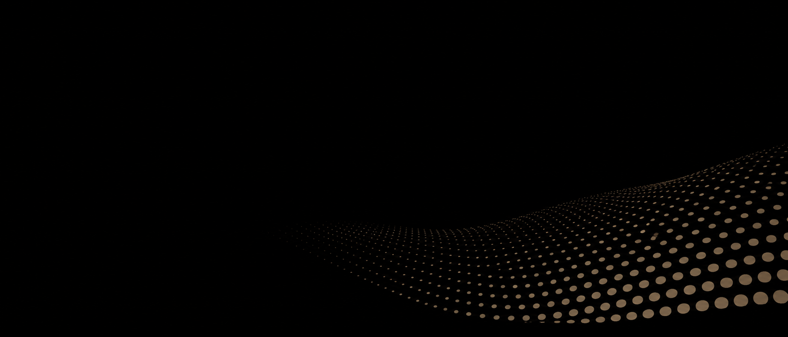
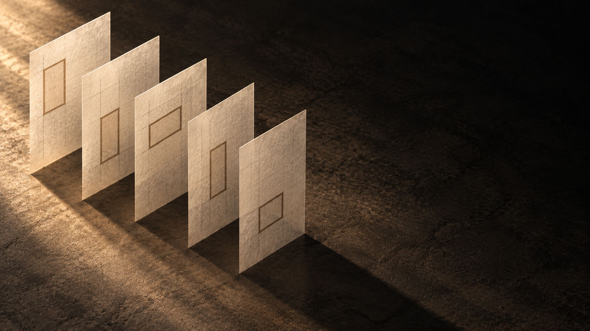

2026-11-01。画像1枚と対応する英語プロンプトを、Geminiへ1本ずつ送ってください。完成動画は同梱していません。

Generate one actual downloadable MP4 video using the attached dot-wave image as the authoritative visual reference. Deliver the video itself, not code, instructions, a storyboard, or separate still images. DELIVERY Landscape 16:9. Prefer 10 seconds; if your video tool only supports 8 seconds, deliver 8 seconds and scale the timeline proportionally. Prefer 1920x1080; 1280x720 is acceptable if that is the available native output. No soundtrack, speech, or sound effects; omit the audio track if possible. Filename: 13-video-dot-wave.mp4. Create a smooth, naturally repeating loop and state the actual output duration and resolution. REFERENCE AND FRAMING The reference is 21:9. Preserve its full horizontal composition and the proportions of the dots. For the 16:9 output, extend the existing pure black background above the scene; do not crop the wave or stretch the reference. Keep the dot surface concentrated in the lower-right part of the frame. Preserve a large empty black area on the left and above it for website text. Do not add text yourself. LOCK THE CAMERA Fixed camera for the entire shot. No pan, zoom, orbit, shake, perspective drift, focus breathing, or scene cuts. The background is uniformly black (#000000). Use only muted warm brown dots close to #7B6B5A. Near dots are larger, distant dots are smaller, as in the reference. MAIN MOTION: ONE CLEAR TRAVELING WAVE Animate the existing orderly dot surface as a coherent smooth wave. One broad, visibly readable crest travels diagonally from the lower-right foreground toward the upper-left, more distant part of the dot field. The impression should be memorable, comparable in visual strength to a single tile clearly lifting in an otherwise still scene. Do not make the motion almost imperceptible. Use a graceful vertical excursion approximately 10 to 15 percent of the visible dot band's height. Preserve the regular rows, stable dot sizes at each depth, and the overall occupied region. Dots remain distinct rounded marks: they do not turn into sparks, strings, water, fog, or glowing particles. They move together with the surface and return coherently; they do not randomly spawn, vanish, collide, or fly out of the field. The traveling crest is a change in wave phase, not a camera move or the whole pattern sliding across the screen. Keep the left text area empty throughout. LOOP TIMELINE FOR 10 SECONDS 0.0-0.5 seconds: establish the reference state. 0.5-9.0 seconds: complete one smooth full wave cycle, returning to the same phase and shape. Ease in and out without stopping abruptly. 9.0-10.0 seconds: settle into the opening state, matching framing, dot positions, and brightness. No reset jump, exposure flash, or crossfade ghosting. If producing 8 seconds, shorten these phases proportionally rather than cutting off the action. LOOK AND EXCLUSIONS Elegant abstract motion graphics with a matte, understated brown-on-black appearance. Keep the dots clearly visible without turning them gold or neon. No people, hands, objects, lettering, digits, logos, screens, extra geometry, reflective liquid, lens flares, gradients in the background, added bars, or texture noise. Keep overall brightness stable. CHECK BEFORE DELIVERY Confirm that the wave movement is clearly visible, regular rows stay coherent, the left and upper text area stays dark and empty, the camera stays fixed, and the ending joins the beginning. Report any feature you could not achieve instead of claiming it was verified. Deliver the actual video file.
添付のドットの波の画像を基準に、実際にダウンロードできるMP4動画を1本生成してください。コードや静止画の連作ではなく、動画本体を納品してください。 【納品】 横16:9、10秒を希望します。生成機能が8秒のみなら8秒で構いません。その場合は動きの時間配分を比例して短縮してください。 1920×1080を希望しますが、利用可能な標準出力が1280×720なら受け入れます。実際の長さと解像度を明示してください。 音声・音楽・効果音なし。可能なら音声トラックも付けないでください。 ファイル名：13-video-dot-wave.mp4。自然につながるループにしてください。 【構図】 参考画像は21:9です。横方向の全体構図と点の縦横比を保ち、16:9にするために上側の黒い背景を広げてください。波の切り取りや画像の引き伸ばしはしません。 点の面は画面の右下に寄せます。左側と上側には、サイトの文章を載せる大きな黒い余白を保ってください。動画内に文字は描かないでください。 【固定するもの】 カメラの位置・画角・焦点・背景。パン・ズーム・回転・手ぶれ・遠近の変化・カットは不要です。 背景は均一な黒#000000、点は落ち着いたブラウン#7B6B5A。参考画像と同じく、手前の点が大きく、奥の点が小さい配置です。 【動き】 規則正しい点の面に、大きく滑らかな波が1周期伝わって戻ります。波の山は右下の手前から、点の面の左上の奥へ向かって進みます。 動きは見てすぐ分かる強さにしてください。静止画のような微動には限定しません。目安は、見えている点の帯の高さの10〜15％程度の上下動です。 点の並びは面として連動し、列の規則性・奥行きごとの点の大きさ・全体の占有範囲を保ちます。丸い点を火花、糸、水、霧、発光粒子へ変えません。 点のランダムな発生・消失・衝突・飛散をなくし、波の位相の変化で動きを作ってください。模様全体の横滑りやカメラの移動に置き換えないでください。左側の余白は常に空けます。 【10秒の流れ】 0〜0.5秒：参考画像の状態を見せる。 0.5〜9秒：波を滑らかに1周期動かし、同じ位相・形へ戻す。急な発進や停止はしない。 9〜10秒：冒頭と同じ点の位置・構図・明るさで落ち着く。繰り返し時の跳び、明滅、二重像を出さない。 8秒の場合は各区間を比例して短くし、動きの途中で切らないでください。 【見た目・禁止】 マットなブラウンと黒の、上質な抽象グラフィック。点は認識できる明るさを保ち、金色やネオンにしません。 人物・手・物体・文字・数字・ロゴ・画面・余計な図形・反射する液体・レンズフレア・背景のグラデーションやノイズ・帯の追加は禁止です。画面全体の露出は安定させます。 【確認】 波がはっきり動くこと、点の列が崩れないこと、左と上の余白が暗いこと、固定カメラ、開始と終了のつながりを確認してください。実現できない項目は制約を明示し、動画本体を納品してください。

Generate one actual downloadable MP4 video using the attached photograph of five upright tracing-paper sheets as the authoritative composition, material, and opening/closing reference. Deliver the actual video, not production instructions, code, or a storyboard. DELIVERY Landscape 16:9. Prefer 10 seconds; if your video tool only supports 8 seconds, deliver 8 seconds and scale the timeline proportionally. Prefer 1920x1080; native 1280x720 is also acceptable. No soundtrack, speech, or sound effects; omit the audio track if possible. Filename: 14-video-paper-layers.mp4. Aim for a naturally repeating loop and state the actual duration and resolution. PRESERVE THE SCENE Exactly FIVE upright, flat, semi-translucent tracing-paper sheets on the same dark textured surface. Each sheet retains its existing fine grid lines and ONE thin, hollow muted-brown rectangular outline. No letters or numbers. Match the reference positions, sheet sizes, angles, translucency, paper grain, warm upper-left light, dark floor, and dark background at the beginning and end. The sheets are paper, not glass, plastic, metal, or thick blocks. Keep all content within approximately the left 62 percent of the frame. Preserve at least the rightmost 35 percent as quiet dark negative space for website text. Do not draw any text there. LOCK THE CAMERA Fixed-tripod static shot. No pan, zoom, orbit, handheld shake, focus breathing, cuts, or background morphing. The floor and background remain stationary. Each sheet stays planar, upright, and parallel to its original orientation. The grid and brown outline stay attached to their sheet with no independent drifting or redrawing. MAIN MOTION: FIVE LAYERS OPEN AND RETURN Keep the rear-left sheet anchored. Let the remaining four sheets translate gently along the existing diagonal arrangement, with progressively larger travel toward the front-right, so the spacing opens smoothly. At maximum expansion the total horizontal width of the five-sheet group is about 20 percent wider than in the reference, while all five sheets remain fully visible within the left 62 percent of the frame. Then reverse the translation smoothly and return every sheet to its exact original position. The opening should be clearly readable and memorable, not an almost invisible vibration. Preserve the order of all five sheets. Translate them as intact flat sheets: no fanning rotation, bending, flapping, curling, folding, stretching, duplication, disappearance, or sheets passing through one another. No hands or mechanical supports. While the group opens, let a soft warm highlight pass across the five sheets in sequence from rear-left to front-right, revealing the natural translucent paper texture. Keep the highlight restrained and the exposure of the dark text area stable. Do not add a hard spotlight, glowing diagram, laser beam, or neon edge. LOOP TIMELINE FOR 10 SECONDS 0.0-1.0 seconds: hold the reference arrangement. 1.0-4.5 seconds: progressively open the spacing between the five sheets. 4.5-5.5 seconds: briefly show the expanded arrangement as the warm highlight reaches the front sheet. 5.5-9.0 seconds: smoothly bring all five sheets back to their original positions and restore the reference illumination. 9.0-10.0 seconds: hold the opening state so the loop has no position jump or brightness flash. If producing 8 seconds, shorten these phases proportionally and complete the return before the end. LOOK AND EXCLUSIONS Quiet premium still-life photography, matte natural paper and stone, warm ivory near #EEE9E1, muted brown near #7B6B5A, black and deep charcoal. Keep realistic contact shadows. No people, faces, hands, bodies, text, numbers, logos, screens, plants, cups, additional objects, changing sheet count, solid colored rectangles replacing the hollow outlines, glass-like reflections, excessive bloom, or CGI gloss. CHECK BEFORE DELIVERY Exactly five sheets remain visible and distinct throughout, each retaining its grid and one hollow brown rectangle. The opening movement is visible, the camera stays fixed, the dark right text area stays clear, and all sheet positions and lighting return for the loop. Report any limitation honestly. Deliver the real MP4 file.
添付の5枚のトレーシングペーパーの写真を、構図・素材・冒頭と末尾の基準として、実際にダウンロードできるMP4動画を1本生成してください。コードや手順書ではなく、動画本体を納品してください。 【納品】 横16:9、10秒を希望します。生成機能が8秒のみなら8秒で構いません。その場合は各区間を比例して短縮してください。 1920×1080を希望しますが、標準出力の1280×720も受け入れます。実際の長さと解像度を明示してください。 音声・音楽・効果音なし。可能なら音声トラックも付けないでください。 ファイル名：14-video-paper-layers.mp4。自然につながるループにしてください。 【場面】 同じ暗い質感の床の上に、半透明で平らなトレーシングペーパーが正確に5枚立っています。 各紙には、元画像の細い方眼線と、細いブラウンの中空の四角い枠が1つずつあります。文字や数字は入れません。 冒頭と末尾は、紙の位置・サイズ・角度・透け方・繊維の質感・左上からの暖かな光・床と背景を参考画像に合わせます。紙をガラス、プラスチック、金属、厚いブロックに変えません。 紙のグループ全体はおおむね画面の左62％以内に収め、右端35％以上を文章用の暗い余白にします。動画に文章は描かないでください。 【固定】 カメラ・床・背景を固定します。パン・ズーム・回転・手ぶれ・ピントの変動・カット・背景の変形は不要です。 紙は平らに立てた形と元の向きを保ちます。方眼線と四角い枠はそれぞれの紙に固定し、独立してずらしたり描き直したりしません。 【動き：5枚の間隔が開いて戻る】 左奥の1枚は固定します。残り4枚が、元の斜めの並びに沿ってゆっくり平行移動し、手前右側の紙ほど大きく動いて、間隔を広げます。 最大時の5枚全体の横幅は元画像より約20％広くします。5枚すべてが見え、画面左62％以内に収まるようにしてください。その後、滑らかに逆方向へ動き、全紙を元の位置へ戻します。 動きははっきり分かる強さにします。5枚の順序を変えず、各紙は平らな1枚として動かしてください。扇状に回転させたり、曲げたり、はためかせたり、折ったり、伸縮させたり、増減させたり、互いに貫通させたりしません。手や機械の支えは追加しません。 間隔が開く間、柔らかな暖色の光が左奥から手前右へ順番に紙を照らし、透ける繊維の質感を見せます。右側の余白の明るさは安定させ、強いスポットライト、発光図形、レーザー、ネオンの縁取りは加えません。 【10秒の流れ】 0〜1秒：参考画像の並びで静止。 1〜4.5秒：5枚の間隔が順に開く。 4.5〜5.5秒：広がった状態を短く見せ、光が手前の紙へ届く。 5.5〜9秒：元の位置と照明へ滑らかに戻る。 9〜10秒：冒頭と同じ状態で静止。繰り返し時に位置や明るさを跳ばさない。 8秒の場合は時間配分を比例して短くし、終了前に戻り切ってください。 【見た目・禁止】 上質な静物写真。マットな紙と石、生成り#EEE9E1、落ち着いたブラウン#7B6B5A、黒と濃い炭色。自然な接地の影を保ちます。 人物・顔・手・体・文字・数字・ロゴ・画面・植物・カップ・追加の小物・紙の枚数変更・中空の枠の塗りつぶし・ガラスのような反射・強い光のにじみ・CG風の光沢は禁止です。 【確認】 5枚が常に区別でき、各紙の方眼と中空の枠が保たれること、間隔の変化が分かること、固定カメラ、右の余白、全紙の位置と照明が冒頭へ戻ることを確認してください。実現できない項目は制約を明示し、動画本体を納品してください。
クルーアセント：追加動画2本の制作依頼 2026-11-01／Geminiで制作するための参考画像・プロンプト 今回のセットには、完成した動画は入っていません。 既存のタイル動画と合わせて使用する、追加2本分の依頼資料です。 【動画13：ドットの波】 用途候補：トップのファーストビュー背景、章の区切り。 動き：ブラウンの点でできた面に、大きく滑らかな波が1周期伝わって戻る。 添付する画像：13_reference_dot_wave.png 送る依頼文：13_prompt_dot_wave_en.txt 日本語で内容を確認する場合：13_prompt_dot_wave_ja.txt 希望する出力名：13-video-dot-wave.mp4 【動画14：重なる紙】 用途候補：「制作の流れ」ページの冒頭、工程を説明するセクション。 動き：5枚の紙の間隔が順に広がり、光が透け、元の並びへ戻る。 添付する画像：14_reference_paper_layers.png 送る依頼文：14_prompt_paper_layers_en.txt 日本語で内容を確認する場合：14_prompt_paper_layers_ja.txt 希望する出力名：14-video-paper-layers.mp4 【Geminiへの依頼方法】 1. ZIPを展開します。00_README.htmlでも、参考画像と依頼文をまとめて読めます。 2. まず動画13を作ります。Geminiの動画作成機能に13の参考画像だけを添付し、13の英語プロンプトを全文送ります。 3. 動画を保存して確認してから、動画14を別の生成として依頼します。14の参考画像だけを添付し、14の英語プロンプトを全文送ります。 4. 2本の参考画像やプロンプトを一度に混ぜないでください。日本語と英語も両方送る必要はありません。 5. 保存したMP4を91_checklist_ja.txtで確認します。問題があれば90_revision_prompts_ja.txtの該当指示を使います。 【今回の仕上がりの基準】 先に採用したタイル動画と同様に、動きがはっきり分かり、印象に残る強さを目指します。 静かすぎる微動に限定しません。カメラ・文字のための余白・配色は安定させます。 各動画は横16:9、約10秒を希望。生成機能の標準が8秒なら8秒でも構いません。 1920×1080を希望しますが、1280×720の出力も候補として受け入れます。実際の出力仕様を確認します。 13の参考画像は2100×900（21:9）です。動画を16:9にするときは、波を切ったり伸ばしたりせず、上側の黒い背景を広げる指示を入れています。 14の参考画像は1920×1080（16:9）です。 音声なしを希望します。ほぼ無音でも音声トラックが残ることがあるため、掲載前に確認します。 生成後のポスター画像は、採用する動画の実際の最初のコマから作ります。 このセットにある参考画像は、既存の生成済み素材をそのまま使っています。 人物、スタッフ、実在する事務所の映像として使用する素材ではありません。 全ファイル名は英数字、本文はUTF-8（BOM付き）です。
追加動画の再修正指示 共通：不合格の動画と、その動画に対応する参考画像1枚を添付し、該当する指示だけを送ってください。 【13：波の動きが弱い】 Keep the current composition and fixed camera. Make the coherent traveling wave clearly visible, with a broad crest and a vertical excursion of about 10 to 15 percent of the visible dot band's height. Keep the regular rows and empty black left area. Do not replace the wave with random particles or camera motion. 【13：点が飛び散る・模様が流出する】 The dots must remain an orderly connected surface. Remove random particle emission, disappearing dots, collisions, and sideways scrolling of the entire pattern. Animate one full wave phase cycle in the existing field and return to the same shape. 【13：横長の参考画像が切られた】 Keep the complete horizontal composition of the supplied 21:9 reference. For a 16:9 output, extend the existing black background above it. Do not crop the wave, stretch the dots, or move the pattern into the empty left text area. 【14：枚数や絵柄が変わる】 Keep exactly FIVE separate upright tracing-paper sheets for the entire video. Preserve the fine grid and one hollow brown rectangle on each sheet. Do not add, remove, duplicate, merge, bend, or rotate sheets. The printed marks remain attached to their original sheet. 【14：動きが弱い】 Keep the rear-left sheet fixed. Open the spacing of the remaining four sheets progressively until the total group is about 20 percent wider, then return every sheet to the reference position. Keep all five sheets visible within the left 62 percent of the frame. Make this opening and closing clearly readable. 【14：紙がガラスや板になる】 Restore the matte semi-translucent paper fibers and thin paper edges of the reference. Remove glass reflections, thick block sides, plastic gloss, and neon edges. Keep the sheets flat while translating them. 【共通：カメラが動く】 Lock the camera, framing, focus, floor, and background. Remove pan, zoom, orbit, shake, and perspective drift. Keep the intended subject animation; do not reduce all motion to a still image. 【共通：ループで跳ぶ】 Complete the full motion and return to the opening composition and illumination before the last hold. Match the beginning and ending without a jump, brightness flash, or crossfade ghosting. If the tool cannot make an exact loop, state that limitation rather than claiming success. 【共通：音声や出力仕様】 Deliver the actual MP4 with no soundtrack or sound effects, and omit the audio track if possible. Report the real duration and pixel dimensions. A native 8-second output and 1280x720 are acceptable; do not claim 10 seconds or 1080p when the file differs.
追加動画の検品表 【共通】 □ 実際に再生・保存できるMP4。 □ 横16:9。長さと解像度は実ファイルを確認。10秒・1080pを希望するが、8秒・720pも候補として受け入れる。 □ カメラが固定され、余白を含む画面全体が拡大・移動しない。 □ 黒・ブラウン・生成りの配色が保たれ、ネオンや強いCG光沢がない。 □ 動きが目で分かり、印象に残る。微動だけに限定しない。 □ 人物・手・文字・数字・ロゴ・余計な小物がない。 □ 冒頭・中盤・末尾を比較し、ループを3回続けて再生して継ぎ目を確認。 □ 音楽・音声・効果音がない。音声トラックが残る場合は記録し、掲載前に削除。 □ 生成AIが「確認済み」と言っただけで合格にせず、保存した動画を確認。 【13：ドットの波】 □ 点が規則的な列を保ち、1つの面として波打つ。 □ 右下から奥へ伝わる大きな波が見える。 □ 点の飛散・ランダムな増減・全体の横滑りがない。 □ 点が丸いままで、水・糸・煙・火花に変化しない。 □ 21:9の元画像を16:9にする際、波の切り取りや点の引き伸ばしがない。 □ 左と上の余白が暗く保たれ、波が文章領域へ入り込まない。 【14：重なる紙】 □ 始終5枚の紙があり、それぞれの枚数と順序を追える。 □ 各紙の方眼と1つのブラウンの中空の枠が維持される。 □ 紙の間隔がはっきり開き、元の位置へ戻る。 □ 紙が曲がる・回転する・はためく・厚い板になるなどの変形がない。 □ 右端35％以上の暗い余白が保たれる。 □ 紙の透ける質感、接地の影、柔らかな光が自然。 採用後：採用動画の実際の冒頭からポスター画像を作り、掲載用の容量へ調整する。 この依頼セットの検品は参考画像・文章・ZIPに対する確認であり、これから生成する動画が検品済みという意味ではありません。